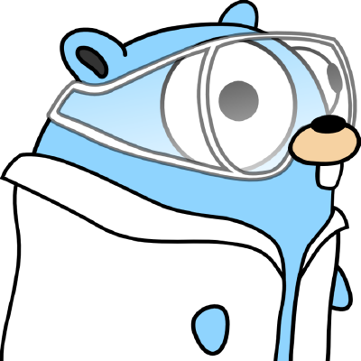
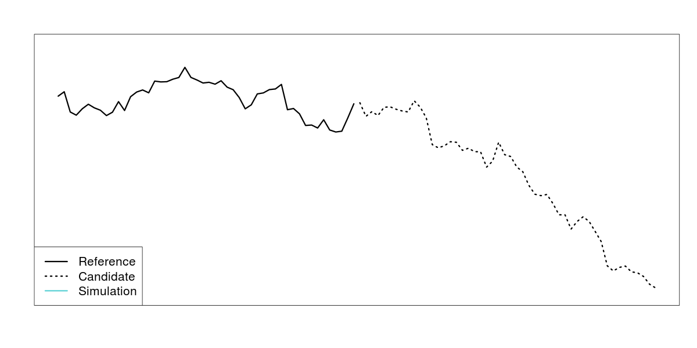
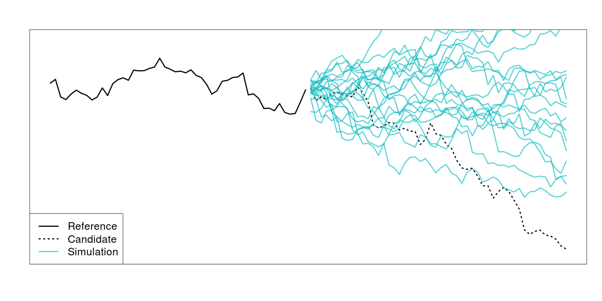
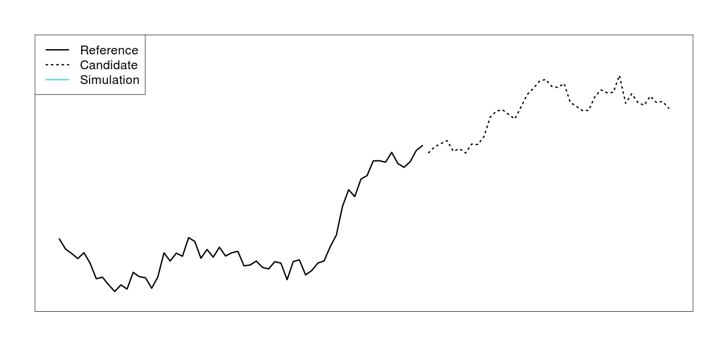
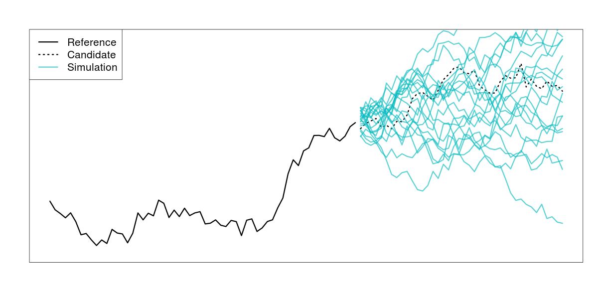

Drew Lanenga, Data Scientist, Lytics

Who has ever made R do something it probably wasn't supposed to do?
There are many possible workarounds: http://adv-r.had.co.nz, but you're always fighting R
go fmt)package main
import (
"fmt"
)
func main() {
fmt.Println("Hello, World!")
}
hello
|-- hello.go
$ cd hello
$ go build && go install # compile, then install on $PATH
$ hello
Hello, World!
func sum(x []float64) float64 {
var total float64
for i := 0; i < len(x); i++ {
total += x[i]
}
return total
}
func sum(x []float64) float64 {
var total float64
for i, value := range x {
total += value
}
return total
}
package vector
type Vector []float64
func (v Vector) Sum() float64 {
var sum float64
for _, value := range v {
sum += value
}
return sum
}
package vector
import (
"testing"
"github.com/bmizerany/assert"
)
func TestSum(t *testing.T) {
x := Vector{1.0, 2.0, 3.0}
assert.Equal(t, 6.0, x.Sum())
}
vector
|-- vector.go
|-- vector_test.go
$ cd vector
$ go test
PASS
ok github.com/drewlanenga/vector 0.004s




walks <- function(x1, x2, niter) {
x1.diff <- diff(x1)
destinations <- rep(0, niter)
for(i in 1:niter) {
steps <- sample(x1.diff, length(x2.smooth), replace = TRUE)
destinations[i] <- x1[length(x1)] + sum(steps)
}
return(list(
lower = mean(destinations < x2[length(x2)],
upper = mean(destinations > x2[length(x2)]
))
}
Do not communicate by sharing memory; instead, share memory by communicating.
- Goroutines facilitate concurrent execution
- Channels facilitate communication across goroutines
package walker
type Vector []float64
func (v Vector) Diff() Vector {
y := make(Vector, len(v)-1)
for i := 0; i < len(y); i++ {
y[i] = v[i+1] - v[i]
}
return y
}
var (
rnd = rand.New(rand.NewSource(time.Now().UnixNano()))
rndmu = &sync.Mutex{}
)
rnd is not thread safe. If we're using rnd in separate goroutines, we'll need to lock it.func walk(nsteps int, steps Vector) float64 {
var dest float64
for i := 0; i < nsteps; i++ {
rndmu.Lock()
which := rnd.Intn(len(steps))
rndmu.Unlock()
dest += steps[which]
}
return dest
}
func Walks(niter, nsteps int, dest float64, history Vector)
(float64, float64) {
destinations := make(Vector, niter)
steps := history.Diff()
for i := 0; i < niter; i++ {
destinations.Walk(i, nsteps, steps)
}
// do stuff to make comparisons to calculate
// p-values from destinations
return plow, phigh
}
func (v Vector) Walk(i, nsteps int, steps Vector) {
dest := walk(nsteps, steps)
v[i] = dest
// no need to return anything, updated in place
}
func Walks(niter, nsteps, ncpu int, dest float64, history Vector)
(float64, float64) {
runtime.GOMAXPROCS(ncpu)
destinations := make(Vector, niter)
steps := history.Diff()
c := make(chan int, ncpu)
for i := 0; i < niter; i++ {
// launch each walk in its own goroutine
go destinations.Walk(i, nsteps, steps, c)
}
// continued on next slide
// drain the channel
for i := 0; i < ncpu; i++ {
<-c // wait for a task to complete
}
// calculate p-values
return compare(destinations, dest)
}
func (v Vector) Walk(i, nsteps int, steps Vector, c chan int) {
dest := walk[nsteps]
v[i] = dest
c <- 1 // send anything back to notify completion
}
func compare(destinations Vector, dest float64) (float64, float64) {
nsteps := float64(len(destinations))
var nlow, nhigh float64
for _, dest := range destinations {
if dest > realDest {
nlow += 1.0
} else if dest < realDest {
nhigh += 1.0
}
}
return nlow / nsteps, nhigh / steps
}